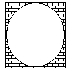

Q. In the figure below, the circle is inscribed in the square. If the area of the square is 16 square feet, what is the area of the shaded region?

√16 = 4
Since the circle is inscribed in the square, a diameter of
the circle has the same length as a side of the square.
Hence, the radius of
the circle is
=
diameter
2
4
2
Therefore, the area of the circle is
π × 22 = 4π
and the area of the shaded region is
16 – 4π
The answer is C.